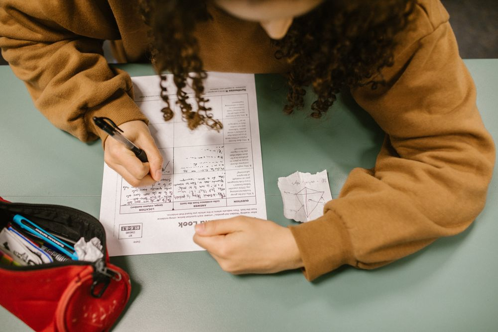

About Teumsae빈 곳만 채우는 단과
필요한 과목만, 필요한 달만 듣습니다.
과목 · 수준 · 학교별로 반을 나눕니다.
How we keep track수업 관리
수업 전후
- 수업 전 10분 단어 · 개념 확인
- 수업 뒤 숙제 사진 제출
보호자 연락
- 주간 테스트 점수 문자
- 결석 · 지각 당일 연락
- 시험 뒤 10분 전화 상담
시험 기간
- 직전 보강 2회
- 자습실 밤 11시까지 연장

Study hall자습실
- 좌석
- 칸막이 32석 · 단과생 지정석
- 시간
- 평일 14:00–22:00 · 토 09:00–18:00
- 질문
- 평일 18–20시 수학 조교 상주
- 이용료
- 월 8만원(단과 수강생)
Questions자주 묻는 질문
한 과목만 들어도 되나요?
네. 모든 반이 과목 단위입니다. 한 달만 듣고 끝내도 됩니다.
우리 학교 반이 없으면요?
같은 교과서 · 비슷한 범위의 학교 반에 넣고, 시험 범위 자료를 따로 드립니다.
레벨 테스트가 있나요?
최근 학교 시험지나 모의고사 성적표로 상담합니다. 따로 시험은 없습니다.
보강은 어떻게 하나요?
같은 주 다른 요일 같은 반에 들어가거나, 수업 영상 대신 판서 사진과 질문 시간으로 채웁니다.
Visit오시는 길
- 주소
- {{ADDRESS|경기 수원시 영통구 청명로 00, 3층}}
- 지하철
- 수인분당선 청명역 3번 출구 도보 5분
- 시간
- {{HOURS|평일 14:00–22:00 · 토 09:00–18:00}}
이용약관 수강 규정은 등록 때 한 장으로 드립니다.
개인정보처리방침 상담 연락처는 등록하지 않으면 6개월 안에 지웁니다.